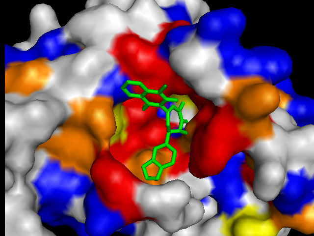
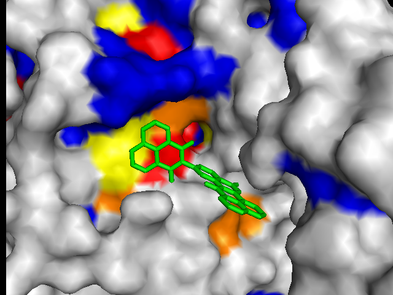
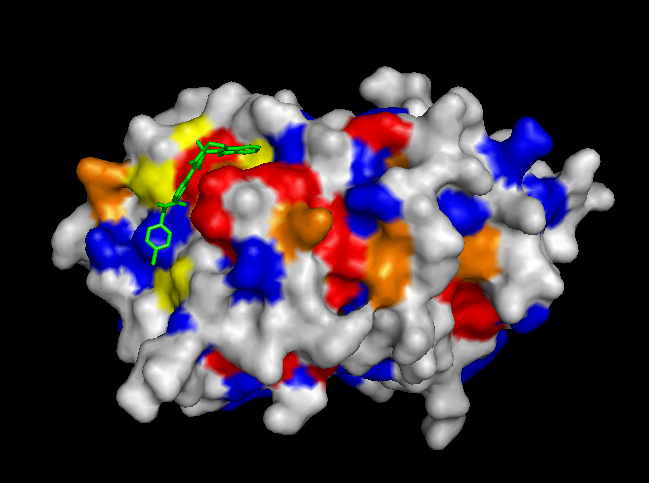
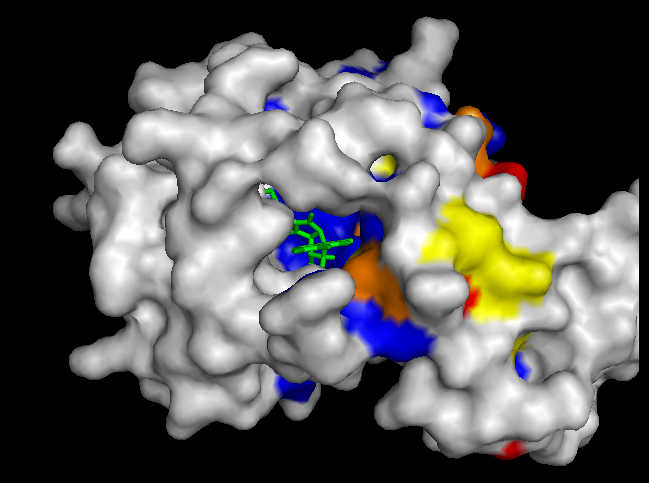
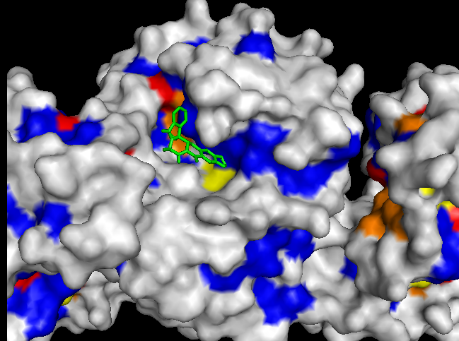

|
Ligands tend to bind near known active sites and/or conserved residues.
For each protein, the top scoring ligands docked close to very highly conserved residues (red). However, the search space used by Vina was limited and centered on the most highly conserved region. To validate these results, we also used Vina to dock a set of ligands in a search space centered on an area characterized by low conservation. These results were somewhat suprising. |
 |
| (a) FtsZ: -12.1 kcal/mol |
|---|
|  |
| (b) CoaD: -10.2 kcal/mol |
 |
| (c) YwtF: -9.1 kcal/mol |
|  |
| (d) RacE: -7.7 kcal/mol |
|
Ligands tend to bind in pockets with conserved residues.
To validate our results we docked a subset of ligands (about 10,777) where we expected the best scores and where we expected the worst scores (based on conservation). This page shows images of ligands docked by Vina in a search space centered on an area characterized by low conservation. Consequently, we expected the top scores for each protein to be worse in this case than in the case where we docked ligands in search space that contained known or predicted active sites. Images (a) and (b) are just as we expected -- the scores are worse (they are less negative). However, images (c) and (d) show that ligands scored better in this search space. We have been focussing on conservation but surface topology is important too. Image (c) shows a ligand that scores well due to a deep pocket with moderate conservation. For this protein, topo |
|  |
| (a) FtsZ: -8.4 kcal/mol |
|---|
 |
| (b) CoaD: -6.6 kcal/mol |
|  |
| (c) YwtF: -11.4 kcal/mol |
|  |
| (d) RacE: -8.3 kcal/mol |